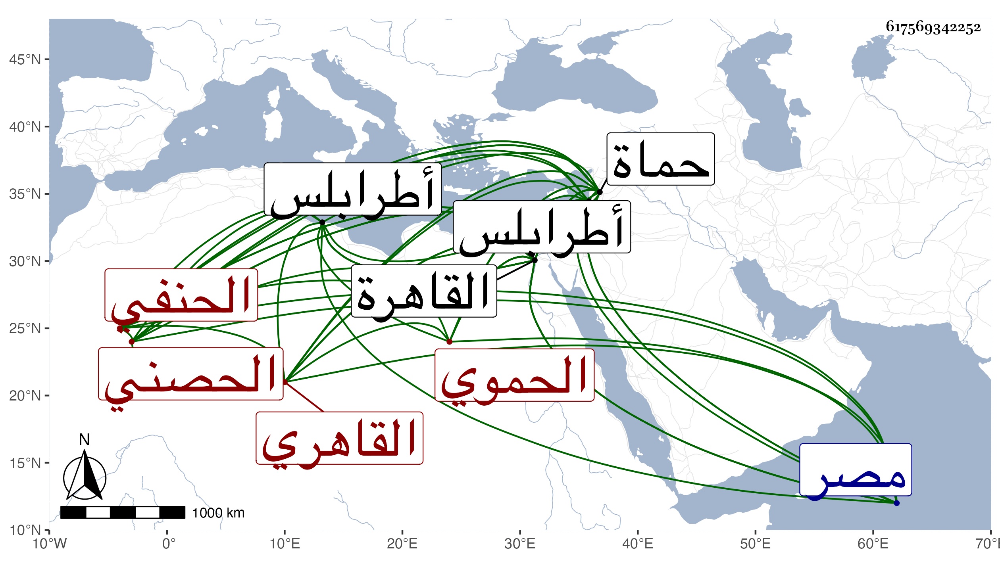

0902Sakhawi.DawLamic.ITO20230111-ara1.EIS1600.617569342252
Biography ID: 617569342252
443
الحسن بن علي بن محمد بن أحمد بن علي بن محمد بن أحمد البدر أبو عبد الله بن العلاء بن الشمس الحصني ثم الحموي القاهري الحنفي ويعرف بابن الصواف . كان جد والده مباركا معتقدا وخدم ولده العلاء القضامي في التجارة وغيرها حتى قيل إن ثروتهم منه وتعاني ولده التجارة لنفسه وصار ذا خبرة بالابل وانتقل في كنف أبيه فارا من الفتنة لحصن الأكراد بين حماة وطرابلس ، وكان مولد البدر هذا هناك في سنة ثلاث وثمانمائة فلما انقضت الفتنة رجعوا إلى محلهم حماة ، ونشأ البدر على طريقة والده في المعاملة والتجارة وحفظ المختار والأخسيكتي ومنظومة النسفي وأخذ الفقه عن قاضيها ناصر الدين محمد بن عثمان بن الجيني وسمع في صحيح مسلم على الشمس بن الأشقر وحج وقدم القاهرة فحضر دروس الشمس بن الديري وقاري الهداية وكان ممن عينه أولهما من طلبته لصوفية المؤيدية أول ما فتحت ، ورجع إلى بلاده ثم قدم والكمال بن الهمام إذ ذاك شيخ الاشرفية المستجدة فلازمه وقرأ عليه نصف التحقيق شرح الاخسيكتي وسمع عليه باقية مع بعض شرح ألفية الحديث ، وصار ذا مشاركة في الأصول مع حفظ جانب من الفقه واتفقت وفاة شيخه ابن الجيتي والبدر إذ ذاك بالقاهرة فقام معه الجمال بن مصطفى الحنفي أحد أصحابه أتم قيام بملاحظة شيخه الكمال وكذا الأمين الاقصرائي لكونه ممن كان يتردد إليه عند بعض الأمراء حتى ولى قضاء بلده في أول سنة إحدى وثلاثين فأقام فيه إلى أن مات وتقدم بكثرة الهدايا والخدم ومزيد البذل لأرباب الحل والعقد والمبالغة في الضيافة ونحوها للقادمين عليه من ذوي الوجاهات والمناصب فزادت بذلك وجاهته وانتشرت متاجره ومستأجراته وروعي جانبه وكثر الراغب في الحلول بساحته وطالبه ، حتى كان الجمالي ناظر الخاص من المساعدين في مآربه والقاهرين لمن يلتمس خفض جانبه لكثرة ما كان يجلبه إليه ويحكمه فيما يقول فيه عليه ، وكان بينه وبين المحب بن الشحنة مزيد اختصاص فرغب في تزويج ابنه الصغير لابنة البدر واتفق قدومه القاهرة والمحب قاضيها فأنزله بجانبه وكاد أمر المصاهرة أن يتم فطرأت منافرات بين النساء اقتضت حصول وحشة وحاول جماعة إزالتها بكل طريق فما أمكن وتكلف البدر بسببها قدرا طائلا حتى انقطعت الوصلة وتطرق للسعي في قضاء الحنفية بالديار المصرية وساعده الدوادار جانبك الجداوي حتى استقر ببذل مال بعد صرف المحب المشار إليه ، ولم يلبث أن تعلل ثم مات وقد استكمل خمسة أشهر واياما يقال وهو مسموم في المحرم سنة ثمان وستين وصلى عليه برحبة مصلى باب النصر في جمع حافل منهم الاتابك قانم التاجر ودفن في حوش منسوب للاتابك بجانب تربته بالقرب من تربة الظاهر برقوق ، وقد أطلت ترجمته في القضاة والوفيات ، وكان صالحا تام العقل متواضعا محبا في المذاكرة بمسائل العلم والأدب بل يقال انه من المتميزين في الفقه والاصول وقد جلست معه مرة أو مرتين قبل ولايته وسألني عن بعض الأحاديث مرة بعد أخرى رحمه الله وإيانا .
